01
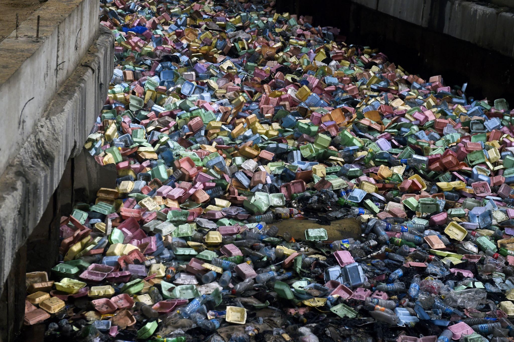
FIELD DETAIL 01Blocked channels
Documenting drains obstructed by refuse, sediment, vegetation or other materials, where observed.
IWAYA · LAGOS STATE
A closer look at the drainage systems, the water that gathers, and the everyday realities beneath the surface of Iwaya.
SCROLL TO INVESTIGATELOOK CLOSER
In Iwaya, the condition of drainage infrastructure is more than an engineering question. It is part of the environment people move through every day. This investigation examines what is there, what is obstructing the flow, and what those conditions mean for the community.
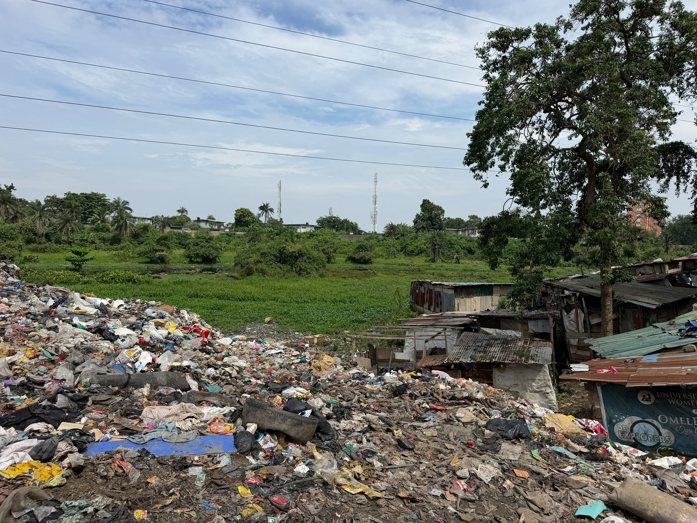
This field photograph records a refuse accumulation area documented during the team's Iwaya investigation. The wider study examines drainage conditions and the surrounding environment.
EXPLORE THE EVIDENCE ↗THE PRESSURE POINTS
The investigation is organised around observable conditions.

FIELD DETAIL 01Documenting drains obstructed by refuse, sediment, vegetation or other materials, where observed.
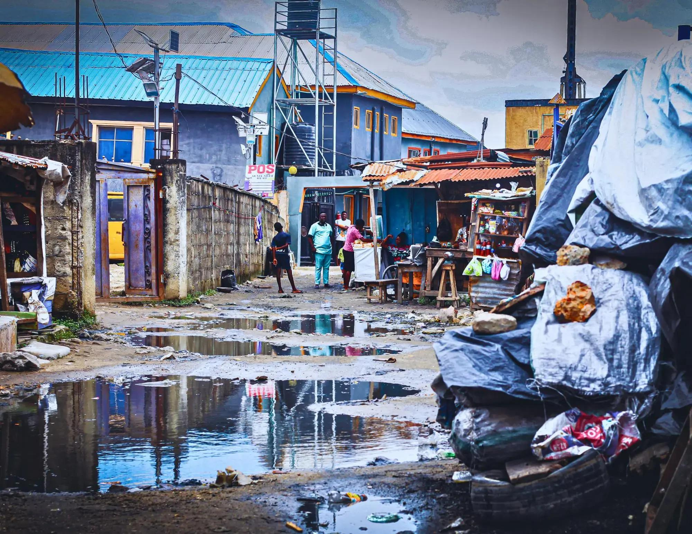
FIELD DETAIL 02Examining places where water remains in or around drainage channels and recording the conditions present.
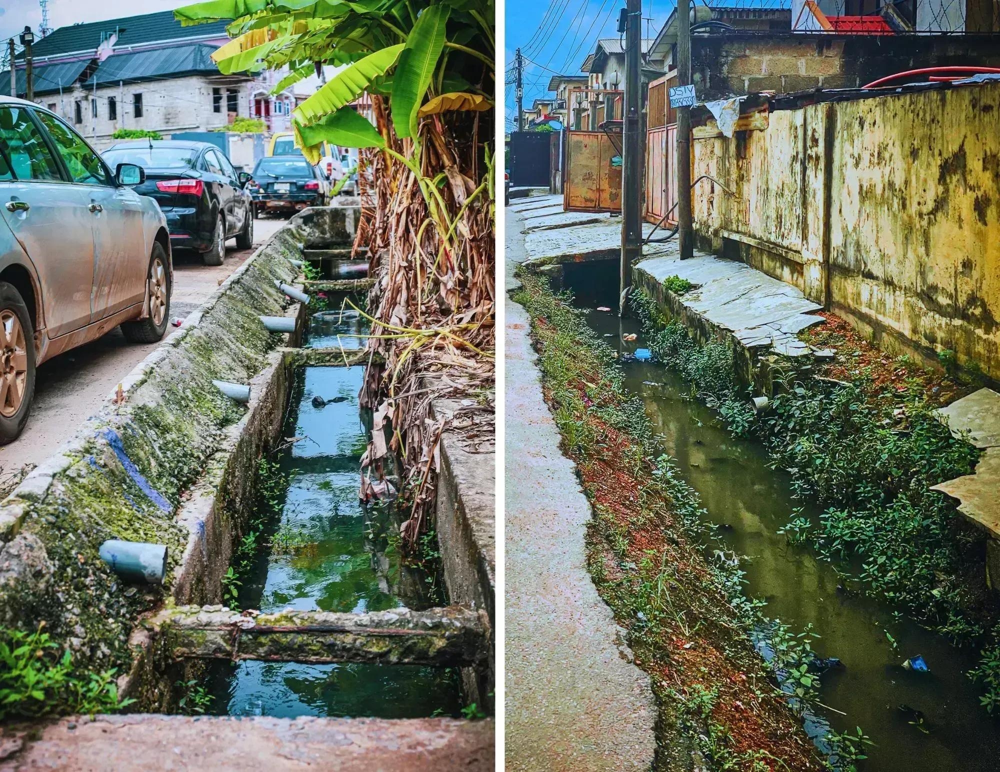
FIELD DETAIL 03Looking at the structure, continuity, accessibility and maintenance of drainage channels.
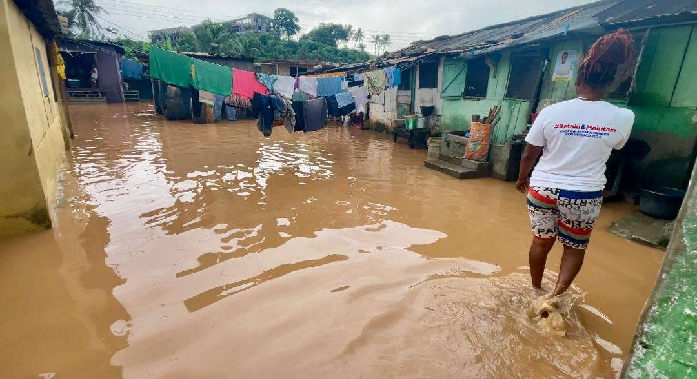
FIELD DETAIL 04Recording reported or observed overflow and any locations where water moves beyond the drainage channel.
“
It is also about the streets people use, the homes beside the channels, the routes to work and school, and the quality of the environment they share.
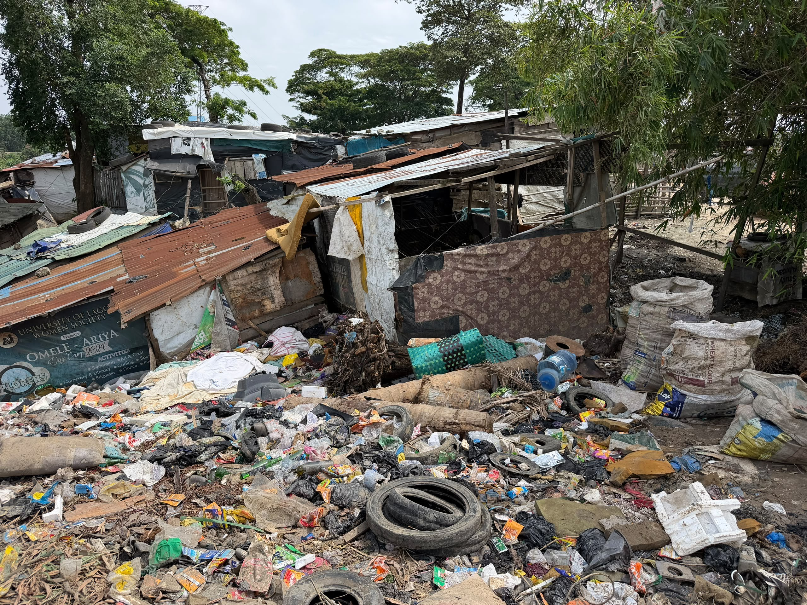
BEYOND THE FIELD
As part of the Iwaya investigation, the research team visited the palace to engage with the traditional institution and document this aspect of its fieldwork.
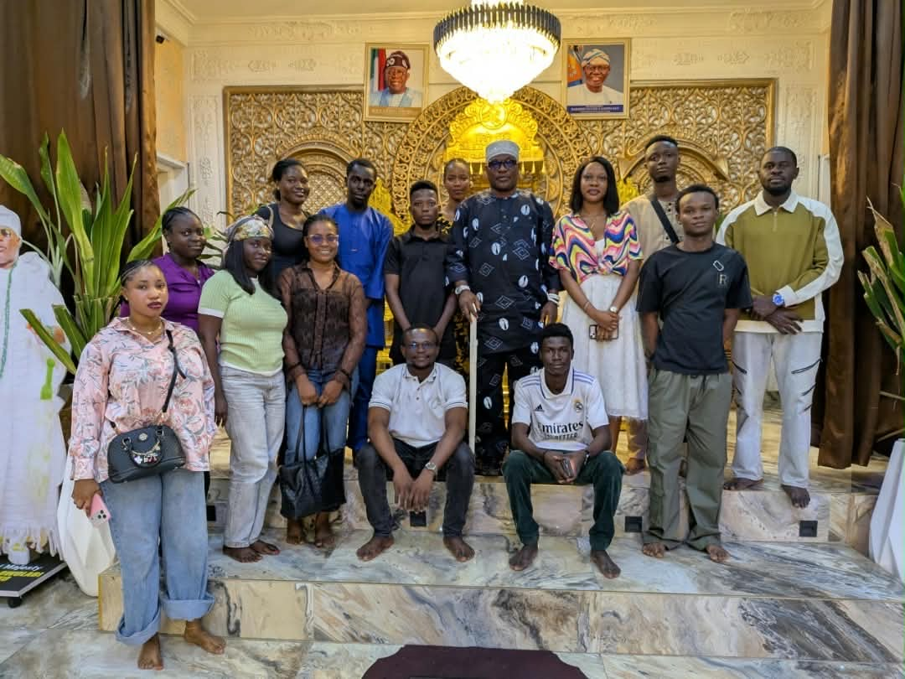
The palace visit forms part of the team's wider engagement with the Iwaya community. The traditional ruler's interview is featured in the documentary.
EVIDENCE FIRST
These photographs document refuse accumulation at a water's edge and around nearby structures. They form part of the visual record.
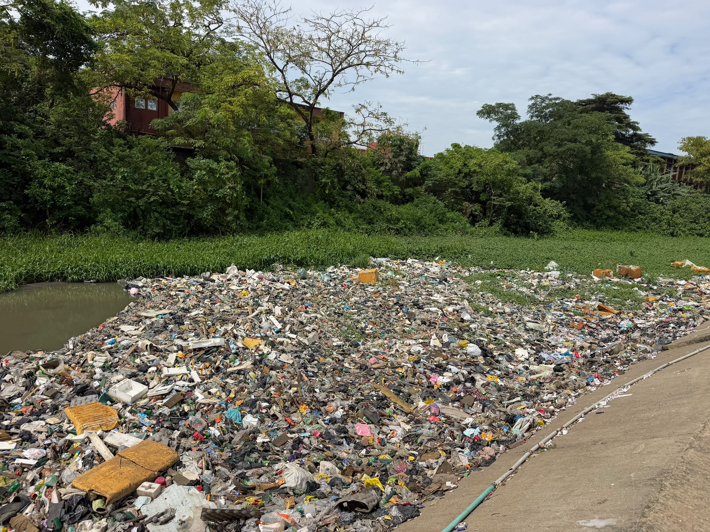
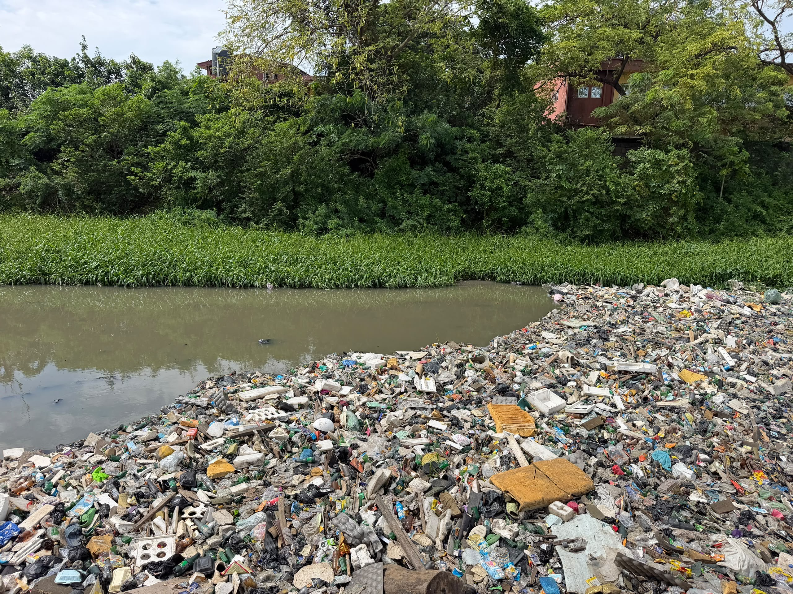
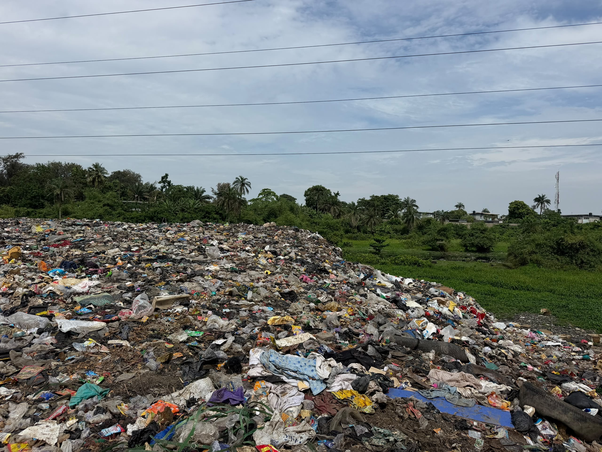
BEYOND THE WRITTEN REPORT
Field observations, drainage conditions and community experiences documented by the Iwaya research team. The documentary also features the team's interview with the traditional ruler.
THE MINDS BEHIND THE INVESTIGATION
The people responsible for documenting, investigating and examining drainage conditions in Iwaya, Lagos State.
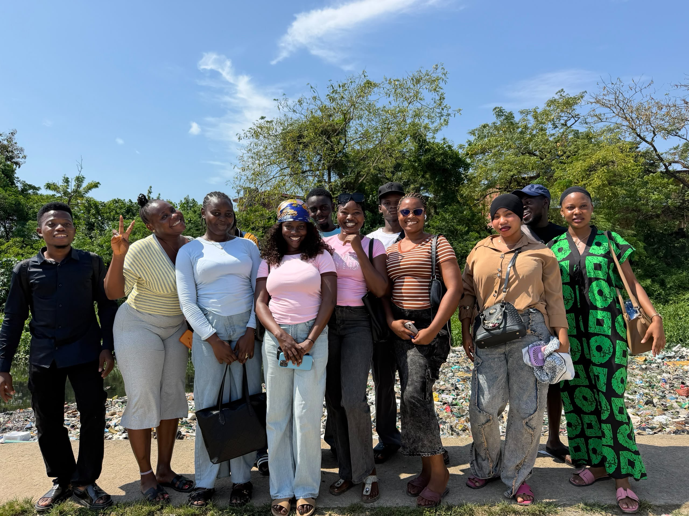
MATRIC NO: 076
MATRIC NO: 077
MATRIC NO: 078
MATRIC NO: 079
MATRIC NO: 080
MATRIC NO: 081
MATRIC NO: 082
MATRIC NO: 083
MATRIC NO: 084
MATRIC NO: 085
MATRIC NO: 086
MATRIC NO: 087
MATRIC NO: 088
MATRIC NO: 089
MATRIC NO: 090
08 / HOW WE INVESTIGATE
A credible investigation separates what researchers observe, what residents report, and what can be established through expert or documentary evidence.
Document drainage conditions and their locations.
Record community experiences with consent and context.
Compare observations with expert insight and available records.
Drainage is part of how people live, move and work in Iwaya. This investigation documents what is there, so that decisions about the response rest on evidence.
WATCH THE DOCUMENTARY ↗With thanks to the Iwaya traditional institution and the community members who shared their time and experiences.
15 researchers
Department of Journalism
Yaba College of Technology
A community-level investigation into drainage conditions in Iwaya, Lagos State.
BACK TO TOP ↑